don`t worry, Be Happy !

|
|
don`t worry, Be Happy !
|
|
|
Путевые записки начинающего сноубордиста и зимнего
туриста
Закрытие сезона на Хамар-Дабане 7, 8, 9 мая 2005 ... Как выяснилось позже - свежайшая, чуть не накрывшая ребят, отдыхавших у ручья после спуска. Возле лавины стоит толпа, кто-то ее обходит. Все нормально, спас-работы не идут, значит все живы. Спускаюсь к лавине. Следы сноубордов уходят под нее. Там, где я и Настя вчера спустились, лежат глыбищи мокрого и грязного снега. Лавина тянется с самого верха - оборвался карниз. Водички, значит, не попить тута. Ребята только что ушли. Перехожу лавинный вынос 3-хметровой высоты. На подходе к лагерю, чуть в стороне на камне курят Вера и Настя. Тропинку перебежал бурундучек. Дима из Иркутска поведал о том, что наши ребята буквально
выскочили из лавины по крутому склону ручья, под снегом остались 4 борда
и рюкзачок с видеокамерой Оксаны. Но никто не пострадал. Четверка покорителей Хот-дога (Оксана, Чингиз, Настя,
Артем), встретились на спуске с девчонками, спустившимися с Шаман-горы
(Вера, Света и Ира). Вместе были в конце спуска у ручья, умывались и
переводили дух. Оборвался карниз, и пошла лавина. Кто-то заметил и Артем: Я стоял у самого ручейка и наблюдал за счастливыми лицами. Вдруг в какие то доли секунды их лица изменились, в глазах был виден ужас и страх. Тут же последовал резкий и четкий крик " Наверх!" И все ринулись в гору. Кругозор в моих глазах сузился до 2 кв.м, все остальное пространство заняла темнота. Когда я уже был в безопасности, как мне казалось, я посмотрел на лавину. Это была громадная волна из снега и грязи высотой более 5 метров. Это заняло меньше секунды и снова наверх. Боковым зрением оценив расстояние от лавины до себя я оглянулся и увидел девчонок. Их глаза были наполнены страхом и безнадежностью. Ноги почти касались лавины. Это очень страшно, когда видишь реальную угрозу и глаза, которые говорят обо всем. ВЕРА: Понимаю,
что не говорить об этом нельзя. Но и превращать случившееся в+ неохота.
Где грань? В жизни человека много чего может произойти. И много чего
не произойдет. Кирпич может оказаться на крыше и попытаться в вас попасть.
А может остаться разлагаться на той крыше, ежели не судьба. Я, конечно
же, слышала про лавины, видела их не только в кино, но и в реале. Живыми
и уже упавшими. Они были рядом и так+далеко.. Сам факт того, что лавина
может сойти НА МЕНЯ казался диким. Почему я? Нее, не должно... Оказалось,
напрасно я так думала.. Дело пяти минут. Сойди она чуть раньше, возможно,
не писать мне этих строк. Случись все позже, мы бы воспринимали все
как экстремальное происшествие, мол, будет о чем вспомнить на свалке)).
Но все произошло именно тогда, когда произошло. Как сказал один китайский
мудрец, все всегда случается вовремя. Ирина: До сих пор не могу осознать и понять опасность той ситуации, в которую мы попали. Всего несколько минут назад мы спускались на бордах со клона и подъехали к ручью. Сил идти куда то и делать что - то просто не осталось. Мне просто хотелось помыть лицо в ручье и забрав вещи, подняться в лагерь. Я воткнула борд в снег и пошли мыться. Но тут я услышала какой - то крик и обернулась. Все поднимались по склону, быстро , быстро, утопая в снегу. Сначала я ничего не поняла и сунду стояла просто оцепенев, пока не обернулась и не посмотрела наверх. Когда я увидела что в нескольких десятков метрах от меня движется огромная куча грязного снега, я поняла, что именно поэтому все побежали. Потом кто-то крикнул: " наверх, скорее наверх!" Я поняла, что это лавина, и она движется прямо на нас. На это потребовалось какая то доля секунды. Я схватила борд и ветровку и побежала в сторону. Больше всего, что меня испугало и предало силы - это то, что я бежала последней. Страх предал мне силы. А борд помог выбраться из снега Ноги утопали в мягком и мокром снегу. Ползти наверх было сложно, но кто-то постоянно кричал:" Наверх, скорее!". Лавина опустилась. Мы все оказались в стороне. Затем она начала поворачивать прямо на нас. Все уже поднялись наверх. На полпути остались только я и Света. Нам пришлось выбираться дальше. Я не видела и не слышала ничего, а просто понимала, что нужно двигаться вперед. Потом мне сказали, что лавина прошла всего примерно в метре от меня. Когда мы выбрались и лавина сошла полностью, у меня был шок. Я не знала, то ли плакать, то ли смеяться. Смешанное чувство радости и страха сковали меня. Я не могла двигаться , села на снег. Я вся была мокрая, кофта, штаны, ботинки. Когда я бежала, было все не важно. Голыми руками я хваталась за снег, пытаясь не провалиться. Но снег был мягкий. Минуты три я просто сидела на снегу, ничего не понимая и ни на что не реагируя. Позже, когда мы уже уходили в лагерь, спускаясь вдоль лавины, я увидела из каких огромных валунов грязного снега она состоит . Я представила, чтобы было с человеком, если он попал в это мессиво. Мне стало страшно. И страшно до сих пор. Страшно от того, что если бы спускались минутой позже или вовремя кто-то не крикнул и не побежал, то могли быть жертвы. Сейчас я не понимаю всего этого, потому что впервые в такой оказалась в такой ситуации. но я рада, что мы выбрались и все остались живы. Я никогда этого не забуду. Ксюша:
Это был один из моих" Отличных дней в горах". Прекрасная погода,
веселые улыбающиеся лица ребят, безумные прыжки с карниза, видеосессия,
подъем на пик Тальцинский, балдеж на пупыре, фото сессия, восторженное
возвращение в лагерь. День подходил к концу. В С разных склонов все
спускались к одной точке - к ручью. первым там оказался Артем. Затем
подкатились мы - Я, Настя и Чингиз. Мы были в восторге от катания. Делились
впечатлениями, строили планы на завтрашний день. Через минут 5 в это
самое место подъехали девчата Иринка, Света, Вера. Встреча произошла
случайно. Через минуту я слышу грохот, я не осознаю, что это уже она...
Взгляд наверх. УЖАС! Падающий бушующий снегопад! Я несколько раз сама
попадала в лавины. Но такое!!! Она не сползала, она летела, захватывая
на пути все новые и новые глыбы. Я подумала, что мы все не спасемся.
Инстинкт самосохранения сработал. Дальше -темнота. Жгучий снег. "
Наверх!" Пальцы распухли и горят. Ничего и никого не вижу. В руке
крепко зажат Настин кремик, несколько секунд у ручья мы мылись и приводили
себя в порядок... Настя:
Быстрее, выше!. ... Бросайте доски... Это Чингиз. Он от меня в двух
метрах... С большими глазами! Но в них не испуг. Его взор обращен налево.
Кубики,.. нет кубища грязи, почти игрушечной нереальной лавины. Это
не язык Это живая шевелящаяся масса снега, грязи, камней, палок... И
чего то еще?! " Услышала грохот, моментально в голове : "
Лавина!" 1 секунда: вижу как упал карниз! еще в самом начале пути,
но такая близкая. Мгновение. Движение впереди: вижу только боковым зрением
тела, метнувшиеся наверх. Где -то в подсознание: " Не все..."
2 секунда: Подо мной лежит мой борд. Хватаю одной рукой, смотрю на лавину:
она уже на языке, большая . Кидаю борд с какой то легкостью в душе,
2 шага: по грудь закопалась. 3 секунды: застреваю в снегу, слышу свое
дыхание. Где то рядом и Света. Ощущаю ее каким то шестым чувством. вылезаю...
" Наверх!... Опять Чингиз. Поворачиваю голову. Иришка где тот сзади.
Блин, Ла-ви-на!. Это слишком ласковое для нее название. Это " Пампера"
Нет -" Жопа!"... Встала" Наверх!" Чингиз. Почему
то слышу только его. Голливуд какой-то. Глыбы шевелятся и хватают Иринку
за ноги. Ползу вперед. Вырывается:" Ира-а!" На мгновение желание
сбежать вниз. Света: И тут... Все рванули в гору. И почему то я подумала, что они просто от радости побежали играть в снежки и ринулась догонять их, Пробежав 2 шага, я оглянулась и увидела надвигающийся на нас поток снега. в одну секунду я по инерции спустилась и схватила борд, крепко прижимая его одной рукой, побежала в гору крича:2 Ира, быстрей!" Я бежала предпоследней, а Иринка за мной. Силы были на исходе, да и снег был рыхлый, что усложняло движение, в руке была бондана, она спасала меня от острого, жгучего снега. Чингиз кричал " Бросайте борды". Я оглянулась еще раз в огромный селево-снеговой поток, он набрал скорость и мощность во много раз. Только когда я кинула борд возле куста, мы были уже на безопасной высоте, лавина остановилась. После этого я обнаружила, что мой борд не унесло. Нас запросто могло унести и просто раздавить. В таких ситуациях , в такие моменты понимаешь, как дорога жизнь твоя т твоих друзей Осознаешь, что твоя жизнь ничтожна перед природой, перед богом. И я благодарна им за наши жизни. Чингиз: День первый. После нелегкого захода мы сразу решили идти покататься немного. Сразу обратил внимание на эти карнизы, хотя вроде снег на склоне сошел, не верилось, что что-то будет. В общем весь день я опасался, не дай бог что-нибудь сойдет на нас. Но... После тог, как мы ощутили прелесть майского катания на Хамар-Дабане, я решил, что все будет О.К День второй. Просыпаюсь. Настроение хреновое, хотя спал отлично. После сытного завтрака двигаем наверх, ноги еле двигаются, но потом наверху открылись резервные силы ( есть хоть какая то тренировка). Попрыгав с карнизов, пообедав, решили скатиться вниз по Хот-догу. Пока забирались до места старта, на карнизе заметили каркающую ворону. Я шутливо перебросился с Артемом, что это знак не скатываться оттуда и подкалывая Настю, хоть ей было, мне кажется страшно ( помню по себе). Съехали все хорошо, у всех это эмоциональный подъем, все пере друг другом говорят: " видел, как там классно я съехал?!. Видел, как я мощно прыгнул?!". Лавина. Спустились к ручью. Все довольные, глаза горят, потихоньку подтягивается вся команда. Умываемся, кто- то предлагает идти в лагерь, кто-то говорит, что можно отдохнуть еще. В общем ничего не предвещало беды. И вдруг, грохот. Кто-то что-то крикнул, я посмотрел наверх - все было одновременно. при виде падающей коричневой массы шириной 40-50 метров в голове возникает четкий алгоритм действий: бежать на склон. Кто-то истерично выкрикивал ( а именно " Наверх"), кто-то потом говорил, что я кричал: " Бросайте доски".Этого, я честно говоря не помню. В начале была мысль, что до нас не дойдет, но когда поток достиг ручья, руки и ноги нашли какие то дополнительные силы и мигом понесли наверх. Когда я оглянулся назад, наконец то появилось чувcтво страха при виде Светы и Иринки, еле карабкающихся со своими досками. Потом хотелось накричать на них, что не бросили свои несчастные сноуборды, но это прошло, хотя мне кажется, до них не дошла вся серьезность ситуации, особенно когда первый поток прошел в считанные сантиметрах от них. Вот тогда я помню, что кричал: " Кидай те доски". Наконец до Светы дошло, А Иринка так и не отпустила борд, хотя, я думаю, никто не смог бы вырвать доску из ее рук. При виде медленно надвигающегося второго вала, я , наконец прихожу в себя, и замечаю, что Ксюша истерично кричит. Я подхожу, держу ее за плечи и говорю, чтоб она перестала пугать народ из лагеря . Потом приходим мысль, что у меня остался мой RIDE- Control!, немного жалко, и следующая мысль:" Какой там сноуборд, главное, что свою задницу унес". Потом пацаны из лагеря налили водки и заставили выпить. День третий. Просыпаюсь от стука дождя по палатке. Вылезаю из палатки, все еще спят. Нехотя иду за водой к ручью, все время оглядываюсь наверх. Мораль."
Следи за собой, будь осторожен...". Все мы смертны и никто не застрахован
о этого. Поэтому надо прожить день, час, минуту, как это последний день
в твоей хрупкой жизни и радоваться ей. 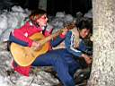 На ужин вкуснющий борщ аля Байкальский Экстрим. Чай с тортом. Веселье у костра, песни под гитару, играла и пела Настя, особенно подпевали Вера и Оксана, остальные слушали и иногда подхватывали знакомые песенки. Сергей, ротный запевала в армии, исполнил громогласно "Идет солдат по городу". Были и другие военные песни. 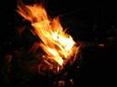 ----------------------------------------------------------------- Дождик пошел под утро и перестал. Сегодня спал долго, да и все тоже долго спали. Пока варился завтрак, сходил за водой. Опасно, блин. Поглядываю на карнизы. Отошел подальше от лавины в сторону леса, набрал воды и обратно, по пути посмотрев, не вылезли ли за ночь бордины из завала. Не вылезли. Позавтракали, и пошел дождь. Командиры объявили сбор и выход обратно. Да и чего в дождь делать - половины бордов нет, копать в лавине под склоном опасно - снежные карнизы отяжелели от дождя и грозят сойти снова. Все равно под вечер выходить собирались. 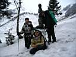 Спуск окончен, но отдохнуть у ручья, под дождем, желания нет, идем дальше. На полянку возле тропы мужчина и девушка разводят костер - они сегодня заходят, хорошего мало заходить в дождь, но может и им повезет с погодой. Рядом стоит Сергей, беспокоился за девчонок. Я сказал, что доведу их, и он рванул вперед, насвистывая и запевая на весь лес :) По дороге еще попались двое заходчиков с собакой. Протока, два дня назад забитая снегом, уже текла желтоватой водой. До турбазы дотопали без перерывов, а зачем стоять - холодно и мокро, быстрее к теплу. Я в дождевике не особенно промок, но на девчонок смотреть жалко. 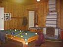 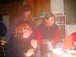 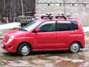 Но на турбазе тепла нет особенно - в коттедже пар изо рта валит. Проходной двор в хорошем смысле. Мокрые возвращенцы, наши и из верхнего лагеря, переодеваются и перекусывают. Многие оставили здесь свои машины и сейчас поедут домой, как Артем, Чингиз, Сергей и Оксана. Груженая легковушка жалобно шкрябнула дном на прощание :) Попил кофе в общей суматохе, пообещал Оксане заслать по почте фоты, подождал оставшихся ребят и вместе с ними двинул на станцию. Правда они пошли не на вокзал, а к Васиным бабушке и дедушке, отогреваться в бане до мотани "Иркутск-Наушки". Последнее фото на границе Бурятии и пора расставаться. Тепло попрощавшись с новыми и старыми друзьями, потопал на станцию. Взял ключ от служебного помещения коллег по работе, сбросил куль и доску, переоделся и пошел в поселок, к маме на День Рождения. С корабля на бал попал :) Мама заждалась, сильно переживала, как это я там один хожу !!! Стол давно уже подъеден, гости поют и танцуют, но это уже другая история. А пока все ! Замечательно сходил и пришел !
Май 2005. Белокрылов А.Ю. Слюдянка. |
Этот отчет был написан сразу после покатушек, на волне бурных чувств :) и потому очень подробный. В этой части использованы материалы Байкальского Экстрима. 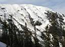 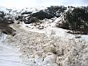 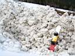 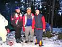 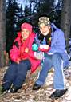 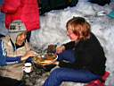 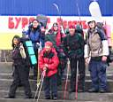
|